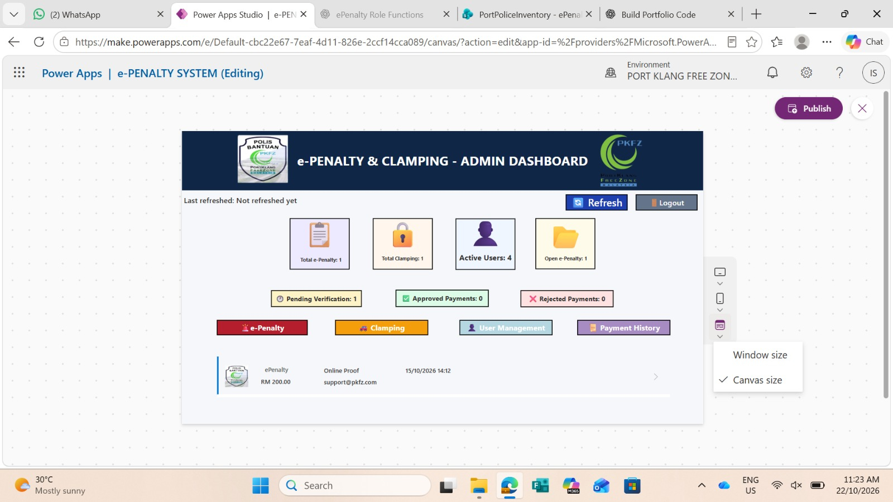

PROJECT CASE STUDY · PKFZ
e-Penalty & Clamping System
A digital business application developed to support Police Bantuan operations at Port Klang Free Zone (PKFZ), bringing penalty records, vehicle clamping records, payment verification and administration into one interface.
01. Project Overview
The e-Penalty & Clamping System was developed to help digitise operational record management for Police Bantuan at Port Klang Free Zone.
The application provides an administration dashboard where users can access penalty records, clamping records, payment-related information and user management functions.

The dashboard is designed to make important operational information easier to review and help users navigate to the relevant records.
02. Problem Statement
Operational records can become difficult to track when information is spread across separate records or manual processes. Staff may also need to review payment status and retrieve historical information.
This project aims to provide a more structured digital interface for accessing penalty and clamping records and reviewing payment status.
03. Key Features
- Admin Dashboard: Summary cards for e-Penalty records, clamping records, active users and open penalty items.
- e-Penalty Management: Navigation to the module for managing penalty records.
- Clamping Records: Access to records relating to vehicle clamping.
- Payment Verification: Dashboard summaries for pending, approved and rejected payment verification statuses.
- User Management: An administration area for managing application users.
- Payment History: Navigation to payment records for review.
04. My Contribution
During my software engineering internship at PKFZ, I worked on the e-Penalty and Clamping Records System as part of the effort to support digital operational records.
- Contributed to the development of the application.
- Worked on presenting operational information through the dashboard interface.
- Organised navigation to penalty, clamping, payment and user-management areas.
- Supported the digitisation of operational record-keeping processes.
05. Application Workflow
The dashboard acts as the main entry point for authorised users. From there, users can navigate to the relevant record-management area and review the available payment status information.
Open the administration dashboard
Select e-Penalty or clamping records
Review the relevant operational information
Access payment verification or history as needed
06. Technical Considerations
- Organising information so that users can find relevant operational functions quickly.
- Presenting record counts and payment statuses clearly in the dashboard.
- Keeping navigation consistent across application modules.
- Ensuring that operational data is handled appropriately and access is restricted to authorised users.
07. What I Learned
This project gave me practical exposure to developing a business application for an operational environment. I gained experience in dashboard organisation, digital record management and presenting information in a way that supports users' daily tasks.
It also reinforced the importance of usability, reliable records and appropriate access control when building internal business systems.